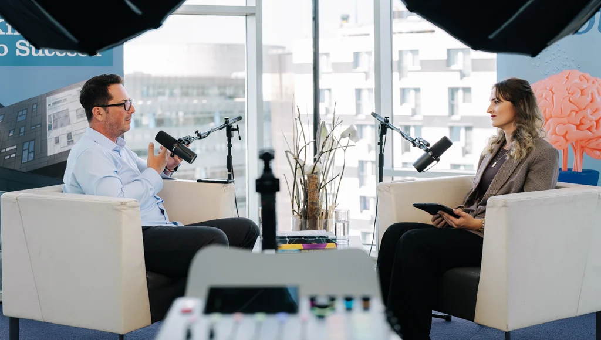

About
Rysing is a branding and visibility studio
The studio was founded by Anzhelika Tauber in response to a market flooded with plain, mediocre AI brands that exist to fill space rather than to build something meaningful.
Our conviction
Visibility is responsibility.
We build brands that come from conviction and a big vision. Brands with the courage to stand out and be seen, and the ambition to change something in this world. When you work with people and businesses like this, marketing becomes a mission.
Behind the studio

Anzhelika Tauber
Anzhelika Tauber, the founder of rysing, is an award-winning brand strategist who has built more than 35 brands and taught more than 350 students.
She began her career in cancer immunology, where she learned to structure complex systems with discipline and precision. Marketing found her almost by accident, through an Instagram account for her dog, Rio, which grew a following of its own and showed her how attention, story and community really work.
Leaving science meant rebuilding her identity from the ground up. Today she brings both worlds together: the rigour of a researcher and the instinct of a creator.
Behind the work.
An interdisciplinary team of experts, each at the top of their own field.

Kim
Brand identity, design systems, and everything you see

Ben
Web development, SEO, and everything web-side

Kristina
Photographer, videographer and content creator

Marc
Partner and producer
The studio
We brand courageous people and the businesses they build.
rysing is a branding & visibility studio. We build the position, the identity, the presence and the proof that make the market see you at full size — clearer than the noise around you, and undeniable next to it.
Most studios work on one or the other. The personal-branding agencies work only on the human and never touch the company's identity. The design studios work on the entity and never touch the founder. You are one person carrying two brands that contradict each other.
A founder brand and a company brand are a delicate infrastructure. They connect at certain points and separate at others, and knowing exactly where — and what each one needs in order to build trust — is the craft.
Courageous brands
A courageous brand refuses to conform.
It belongs to someone who would rather be disliked than sacrifice what they believe. Who says the thing their industry is not ready to hear yet. Who left the safe path and pursued the unknown one, and who is building something meant to outlast them.
Most people carry a version of this inside them and never let it out, because they are afraid of repelling somebody. Courage is staying true to what you believe while you are still scared.

Our work spans Olympic athletes, keynote speakers, founders and top-tier consultants across sixteen countries. rysing holds a HIPE award for outstanding customer satisfaction and performance in the service industry.
In their words
“Within three months my LinkedIn went from invisible to inbound. They rebuilt my positioning and the leads followed.”
 Marcus H.
Founder, B2B SaaS
Marcus H.
Founder, B2B SaaS
“They turned my scattered ideas into a clear brand and a keynote I'm genuinely proud to walk on stage with.”
Elena V.
Keynote speaker
“The content system they built runs without me. My audience grew while I stayed focused on the business.”
Tobias R.
Agency owner
“Finally a brand that actually sounds like me, and converts. Best investment I've made this year.”
Sophie L.
Consultant
“From messy to magnetic. Our website and identity finally match the level of the work we do.”
Daniel K.
Co-founder, DTC brand
“Professional, fast and genuinely strategic. The five stars are not an exaggeration.”
Nadia S.
Executive coach
We see people bigger than they see themselves, and build the brand that proves it.
Trusted by founders, speakers and teams across Europe
The standard behind every brand.
- Excellence.
- The work is finished to a standard, rather than to a deadline.
- Precision.
- The right word, the right pixel, the right decision. Detail is the difference.
- Creativity.
- Professional does not mean boring. We connect the character with originality.
- Integrity.
- We tell you what we honestly think, because the truth builds better brands.
- Care.
- We want to understand you deeply enough to reflect you truthfully. That is the whole craft.
Ready to build your legacy?
We make you visible at the size of your ambition, rather than the size of your current reputation.